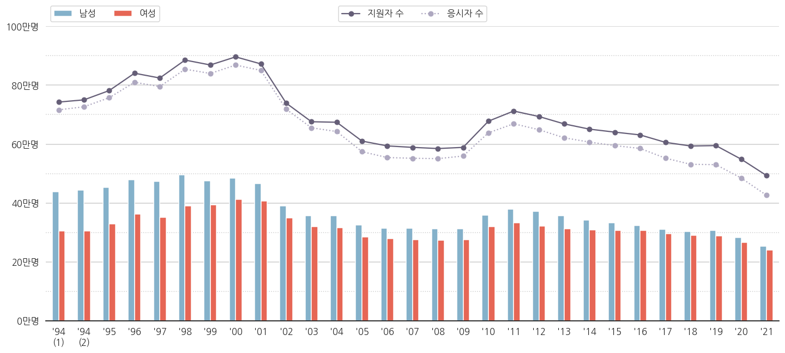
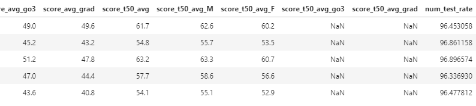
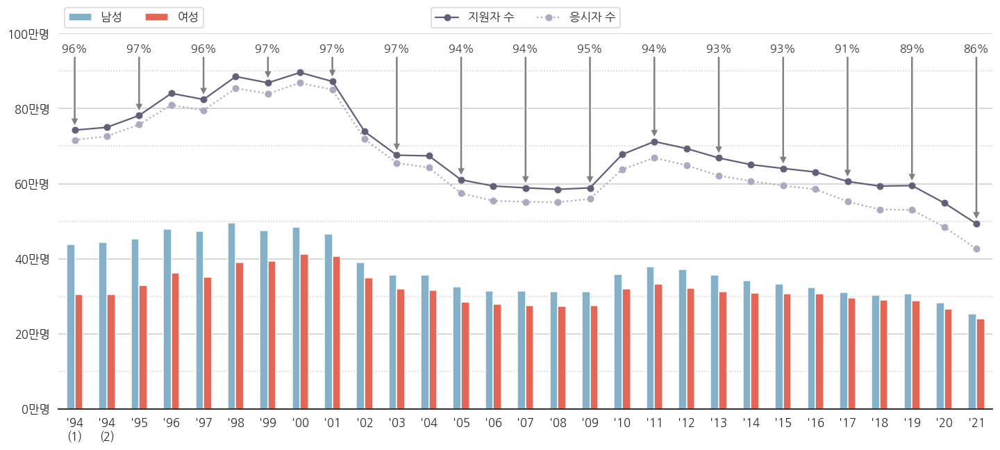
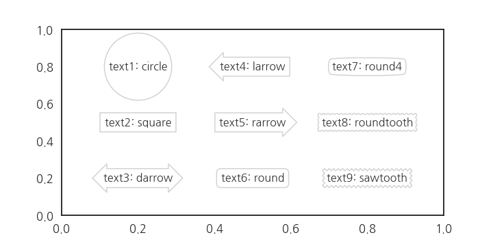
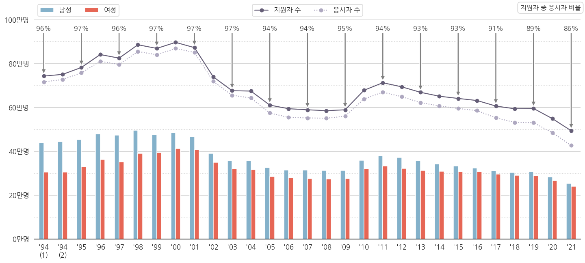
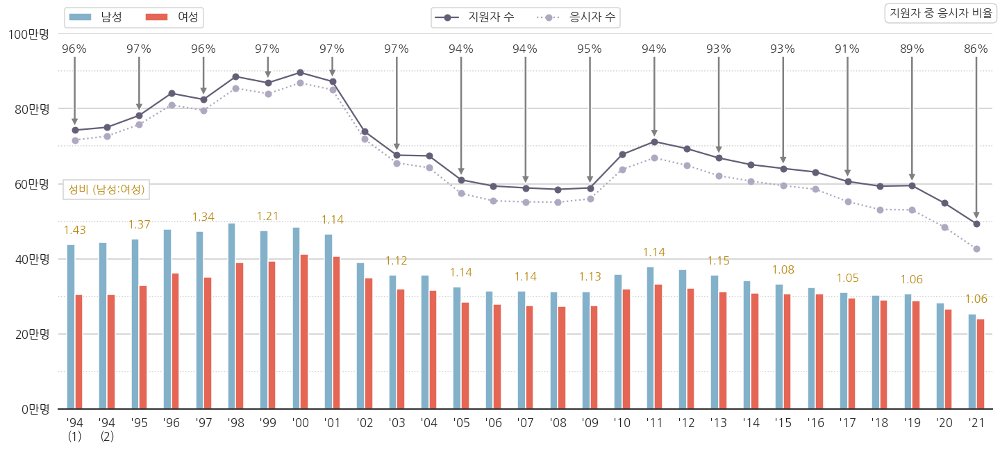
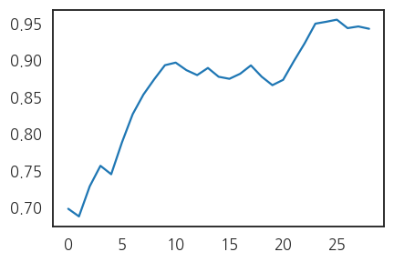
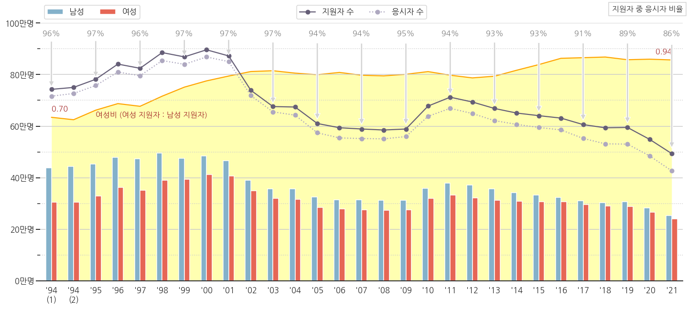
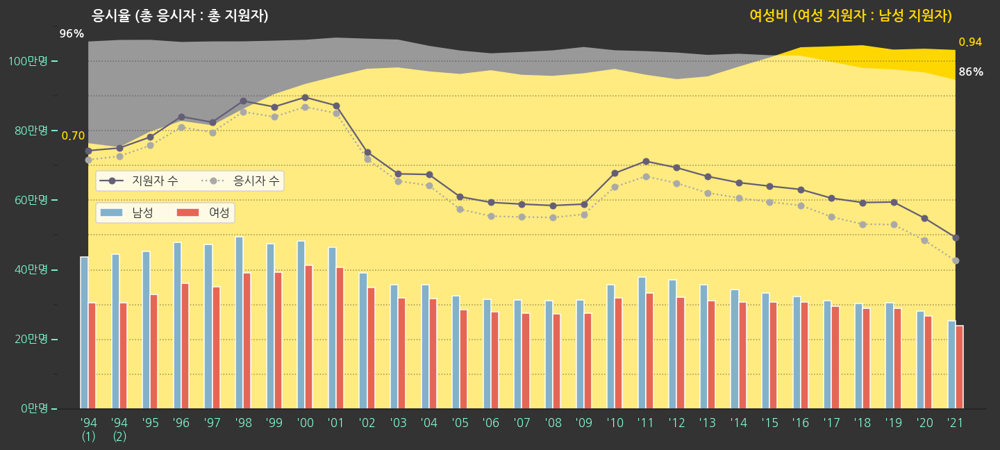

Contributor
김동윤님
- 지난 글에서 spines, grid, legend를 정리했습니다.
- grid를 넣으려고 minor tick도 설정해 보았구요.
- 기본 데이터는 다 그렸는데, 이걸로는 아쉽습니다.
- 메시지를 추출해서 전달해봅시다.
5. 토달기 : annotate

- 지원자 수는 수능을 보겠다고 원서를 제출한 사람 수고
- 응시자 수는 실제로 가서 수능시험을 치른 사람 수입니다.
- 원서를 내놓고 보신 분들이 적지 않습니다. 심지어 늘어납니다.
- 비율로 한번 구해봅시다.
5.1. 파생변수 만들기 : 응시율
- 응시율을 이렇게 정의합니다 :
응시율 = 응시자 수 / 지원자 수 * 100 - 어차피 퍼센트로 표시할 것이라 처음부터 100을 곱했습니다.
- 우리가 가지고 있는 pandas dataframe에 추가해 줍니다.
1
2
3# 응시율 = 응시자 수 / 지원자 수
df_sn["num_test_rate"] = df_sn["num_test"]/df_sn["num_total"]*100
df_sn.head()
- 맨 오른쪽에 num_test_rate가 생겼습니다.
5.2. 응시율 붙이기
- 데이터에 글자를 붙일 때는
.annotate()를 사용합니다. - 문법은 이렇습니다 :
Axes.annotate(self, text, xy, *args, **kwargs)
- 들어가는 인자가 제법 많습니다. 자칫 복잡하게 느껴질 수 있으므로 몇 개만 봅시다.
- 다른 인자는 다음 기회에 보고, 이만큼만 사용해서 그립니다.
- self : 클래스 배울 때 나오죠? 뭐 넣으라는 뜻이 아니라 instance method라는 뜻입니다.
- text : 표시될 글자입니다.
- xy : 글자가 가리킬 지점의 좌표입니다.
A ← B를 넣는다면, A에 해당하는 지점입니다. - xytext : (옵션) 글자가 위치할 지점의 좌표입니다.
A ← B를 넣는다면, B에 해당하는 지점입니다. - arrowprops : (옵션) 화살표를 어떻게 그릴지 정합니다.
A ← B를 넣는다면, ←에 해당하는 인자입니다.
.plot()같은 명령은 설정 한번에 plot 전체에 적용됩니다.- 하지만
.annotate()는 하나하나 그려줘야 합니다. 손이 많이 갑니다. for loop을 사용합시다.
1
2
3
4
5
6
7
8# 응시율 붙이기 1: 데이터 순서 사용하기
for i in range(0, df_sn.shape[0], 2): # 데이터 순서 기준 하나 건너 하나에 적용
ax.annotate(f'{df_sn["num_test_rate"].iloc[i]:.0f}%', # 글자 : 응시율. 소수점 떼고.
xy=(i, df_sn[ "num_total"].iloc[i]+10000), # A : 응시자 수 + 10000 지점
xytext=(i,950000), # B : 여백. 950만명 지점
arrowprops={"facecolor":"gray"}, # ← : 회색.
horizontalalignment='center', # 글자 : 가운데 정렬
fontsize=16, color="k", alpha=0.8) # 글자 크기=16, 색상=검정, 불투명도=0.8
응시율이 숫자로 붙었습니다.
- 방금 데이터를 하나 건너 하나 붙일 때,
for i in range(0, df_sn.shape[0], 2):라고 했습니다. - 데이터의 순서를 사용하는 방법입니다. index가 점프하거나 중복될 때 사용하기 좋습니다.
index 기준으로 하나씩 건너뛰고 싶다면, 이렇게 고치면 됩니다.
1
2
3
4
5
6
7for i in df_sn.index.values[::2]:: # index 기준 하나 건너 하나에 적용
ax.annotate(f'{df_sn.loc[i, "num_test_rate"]:.0f}%',
xy=(i, df_sn.loc[i, "num_total"]+10000),
xytext=(i,950000),
arrowprops={"facecolor":"gray"},
horizontalalignment='center',
fontsize=16, color="k", alpha=0.8)결과물은 정확히 동일합니다.
5. annotate에 legend 붙이기 : text
- 응시율을 넣었으니 이게 응시율인 줄 알게 해야 합니다.
- 비어있는 오른쪽 위 공간에 legend를 넣읍시다.
.text()를 사용하면 간단하게 넣을 수 있습니다.
- text에 다양한 형태의 윤곽선을 두를 수 있다는 사실을 잘 모르는 분들이 많습니다.
ax.text(bbox={"boxstyle":스타일})에서 스타일에 해당하는 부분을 바꾸는 것으로 되는데 말입니다.- 총 9가지 스타일을 제공합니다.
1
2
3
4
5
6
7
8
9
10
11
12
13
14from itertools import product
fig, ax = plt.subplots(figsize=(10, 5))
position = [0.2, 0.5, 0.8] # 글자가 표시될 x 좌표
positions = list(product(position, position[::-1])) # x, y 좌표 만들기
font_text = {"fontsize":16, "color":"0.2", "ha":"center", "va":"center"} # text font 설정
style = ["circle", "square", "darrow", "larrow", "rarrow", "round", "round4", "roundtooth", "sawtooth"] # matplotlib에서 제공하는 bounding box style
# 지정된 위치마다 text 삽입
for i, (p, s) in enumerate(zip(positions, style), 1):
ax.text(p[0], p[1], f"text{i}: {s}", fontdict=font_text,
bbox={"boxstyle":s, "pad":0.4, "facecolor":"w", "edgecolor":"lightgray"})
- fontdict를 설정해서 전체적인 font를 제어합니다.
- text가 삽입되는 지점을 일일이 넣어주기보다
product를 이용해서 간단하게 만들어 줍니다.
round를 선택해서 text로 legend를 만들어줍니다.- 간만에 전체 코드를 한번 적어봅니다.
1
2
3
4
5
6
7
8
9
10
11
12
13
14
15
16
17
18
19
20
21
22
23
24
25
26
27
28
29
30
31
32
33
34
35
36
37
38
39
40
41
42
43
44
45
46
47
48
49
50
51
52
53
54
55
56
57
58
59
60
61
62
63
64
65
66
67
68
69
70
71
72
73fig, ax = plt.subplots(figsize=(20, 9), sharey=True)
df_sn[["year", "num_M", "num_F"]].plot.bar(x="year", y=["num_M", "num_F"], ax=ax,
color={"num_M": color_M, "num_F": color_F})
ax.plot(df_sn["num_total"], 'o-', color=color_total, label="지원자 수")
ax.plot(df_sn["num_test"], 'o:', color=color_test, label="응시자 수")
# 응시율 붙이기 : 데이터 순서 사용하기
for i in range(0, df_sn.shape[0], 2):
ax.annotate(f'{df_sn["num_test_rate"].iloc[i]:.0f}%',
xy=(i, df_sn[ "num_total"].iloc[i]+10000),
xytext=(i,950000),
arrowprops={"facecolor":"gray"},
horizontalalignment='center',
fontsize=16, color="k", alpha=0.8)
ax.set_ylim(0, 1000000)
# yticks major/minor 설정
ax.yaxis.set_major_locator(MultipleLocator(200000))
ax.yaxis.set_major_formatter('{x:.0f}')
ax.yaxis.set_minor_locator(MultipleLocator(100000))
ax.yaxis.set_minor_formatter('{x:.0f}')
# yticks: major
yticks = ax.get_yticks()
ax.set_yticks(yticks[1:-1])
yticklabels = ax.get_yticklabels()
ax.set_yticklabels([f"{y//10000:.0f}만명" for y in yticks[1:-1]])
# yticks: minor
yticks_minor = ax.get_yticks(minor=True)
ax.set_yticks(yticks_minor[1:-1], minor=True)
yticklabels = ax.get_yticklabels(minor=True)
ax.set_yticklabels([], minor=True)
xticks = ax.get_xticks()
ax.set_xticks(xticks)
xticklabels = [f"'{x.get_text()[2:]}" for x in ax.get_xticklabels()]
xticklabels[0] = xticklabels[0] + "\n(1)"
xticklabels[1] = xticklabels[1] + "\n(2)"
ax.set_xticklabels(xticklabels, rotation=0)
ax.set_xlabel("")
# spines
ax.spines["left"].set_visible(False)
ax.spines["right"].set_visible(False)
ax.spines["top"].set_visible(False)
# major grid
ax.grid(axis="y", which="major")
ax.grid(axis="y", which="minor", ls=":")
# legend (1) 남성, 여성
handles, labels = ax.get_legend_handles_labels()
legend0 = ax.legend(handles=handles[2:], labels=["남성", "여성"], ncol=2,
loc="lower left", bbox_to_anchor=(0, 1))
# legend (2) 지원자 수, 응시자 수
legend1 = ax.legend(handles=handles[:2], labels=labels[:2], ncol=2,
loc="lower center", bbox_to_anchor=(0.5, 1))
# legend (3) 응시율
ax.text(1, 1.04, "지원자 중 응시자 비율", transform=ax.transAxes,
fontdict={"fontsize":16, "color":"0.2", "ha":"right", "va":"bottom"},
bbox={"boxstyle":"round", "pad":0.4, "facecolor":"w", "edgecolor":"lightgray"})
ax.add_artist(legend0)
- 10학번 무렵부터 응시율이 떨어지는 추세가 보입니다.
- 2021학년도 응시율이 수능 역사상 최저를 기록했습니다.
- 코로나 영향으로 인해 결시율 최고라는 기사가 있지만, 최근 몇년간 추세를 보면 꼭 코로나 탓은 아닌 것 같습니다.
- 수시 등의 영향으로 수능을 볼 필요가 없어지는 수험생이 안전장치로 지원은 해 놓는 탓에 응시율이 떨어지는 것이 아닌가 싶네요.
- 결시자 중 수시 전형 비율데이터가 있으면 더 명확할 것 같습니다.
6. 성비 구하기
6.1. 여성 지원자 1인당 남성 지원자 수
- 응시율 저하 외에도 남녀 성비의 변화가 눈에 띕니다.
일반적으로 성비를
여성 1인당 남성의 수로 정의합니다.1
2# 성비 = 남성 수 / 여성 수
df_sn["num_M_rate"] = df_sn["num_M"]/df_sn["num_F"]응시율과 같은 요령으로 성비를 넣어봅시다.
응시율을 넣던 for loop에 성비를 같이 넣습니다.
1
2
3
4
5
6
7
8
9
10
11
12
13
14for i in range(0, df_sn.shape[0], 2):
# 응시율
ax.annotate(f'{df_sn["num_test_rate"].iloc[i]:.0f}%',
xy=(i, df_sn[ "num_total"].iloc[i]+10000),
xytext=(i,950000),
arrowprops={"facecolor":"gray"},
horizontalalignment='center',
fontsize=16, color="k", alpha=0.8)
# 성비
ax.annotate(f'{df_sn.loc[i, "num_M_rate"]:.2f}',
xy=(i, df_sn.loc[i, "num_M"]),
xytext=(i, df_sn.loc[i, "num_M"]+30000),
horizontalalignment='center',
fontsize=16, color="darkgoldenrod")legend도 추가합니다.
1
2
3
4# legend (4) 성비 (남성 : 여성)
ax.text(0.01, 0.57, "성비 (남성:여성)", transform=ax.transAxes,
fontdict={"fontsize":16, "color":"darkgoldenrod", "ha":"left", "va":"bottom"},
bbox={"boxstyle":"square", "pad":0.4, "facecolor":"w", "edgecolor":"lightgray"})
6.2. 남성 지원자 1인당 여성 지원자 수
- 1.4를 넘어가던 성비가 차츰 줄어서 1.06이 됩니다.
- 여성의 대학 진학 시도가 더 많아진다고 볼 수 있을 것 같습니다.
- 여성 재수생 비율이 늘어나는 것인지는 현재로서는 알 수 없지만, 그렇다고 해도 재수를 허용하는 비율이 증가한다고도 볼 수 있을 테니까요.
여성 1인당 기준을 남성 1인당으로 바꿔봅니다.
1
2df_sn["num_F_rate"] = df_sn["num_F"]/df_sn["num_M"]
df_sn["num_F_rate"].plot()
10년차와 20년차의 두 단계 점프가 선명합니다.
- 이제까지 그린 그림의 배경으로 깔아보겠습니다.
- 아래 코드를 추가합니다.
1
2
3
4
5
6
7
8
9
10
11
12
13
14
15
16
17
18
19
20# 여성비
ax_F = ax.twinx() # x축을 공유하면서 오른쪽 y축을 다른 스케일로 사용하는 axes 선언
ax_F.fill_between(df_sn.index, df_sn["num_F_rate"], 0, facecolor="yellow", alpha=0.3, zorder=0) # 넓이 그리기
ax_F.plot(df_sn.index, df_sn["num_F_rate"], color="orange") # 윤곽선 강조
ax_F.set_ylim(0, 1.1) # y 범위 설정
ax_F.axis(False) # 모든 spines를 보이지 않게
# 여성비 눈금이 없는 대신, 시작과 끝 지점 데이터로 정량정보 전달.
r_1994 = df_sn["num_F_rate"].iloc[0] # 1994학년도 1차시
r_2021 = df_sn["num_F_rate"].iloc[-1] # 2021학년도
for idx, r, ha in zip([0, df_sn.shape[0]-1], [r_1994, r_2021], ["left", "right"]): # 데이터 삽입
ax_F.text(idx, r+0.02, f'{r:.2f}', fontdict={"fontsize":16, "color":"brown", "ha":ha, "va":"bottom"})
# 새로 삽입된 데이터에 대한 정보 전달
ax_F.text(2, df_sn["num_F_rate"].iloc[0], "여성비 (여성 지원자 : 남성 지원자)",
fontdict={"fontsize":16, "color":"brown", "ha":"left"})
# axes 순서
ax_F.set_zorder(0) # 여성비 데이터를 뒤로
ax.set_zorder(1) # 다른 데이터를 앞으로
6.3. 강조점 변경
- 처음에는 단순히 수능 년도별 인원을 그려봤는데, 응시율과 여성비를 도출했습니다.
- 이번 plot의 주인공을 이것으로 해 봅시다.
- 전체 plot에서 이 둘을 부각시키고, 나머지를 부가 요소로 돌립니다.
- 다음과 같은 과정을 거쳐 강조점을 변경하려고 합니다.
- 응시율, 여성비만 밝게, 나머지 어둡게
- 응시율과 여성비 legend를 강조, 나머지는 숨기기
- 전체 그림에서 응시율, 여성비 외 면적 비중 축소
- 그 결과, 다음과 같은 그림을 얻었습니다.

- 코드는 다음과 같습니다.
1
2
3
4
5
6
7
8
9
10
11
12
13
14
15
16
17
18
19
20
21
22
23
24
25
26
27
28
29
30
31
32
33
34
35
36
37
38
39
40
41
42
43
44
45
46
47
48
49
50
51
52
53
54
55
56
57
58
59
60
61
62
63
64
65
66
67
68
69
70
71
72
73
74
75
76
77
78
79
80
81
82
83
84
85
86
87
88
89
90
91
92
93
94fig, ax = plt.subplots(figsize=(20, 9), sharey=True)
fig.set_facecolor("0.2")
ax.set_facecolor("none")
# 여성비
ax_F = ax.twinx()
ax_F.fill_between(df_sn.index, df_sn["num_F_rate"], 0, facecolor="gold", edgecolor="none", zorder=0)
ax_F.set_ylim(0, 1.05)
ax_F.axis(False)
r_1994 = df_sn["num_F_rate"].iloc[0]
r_2021 = df_sn["num_F_rate"].iloc[-1]
for idx, r, ha in zip([0, df_sn.shape[0]-1], [r_1994, r_2021], ["right", "left"]):
ax_F.text(idx, r+0.02, f' {r:.2f} ',
fontdict={"fontsize":16, "color":"gold", "ha":ha, "va":"center", "fontweight":"bold"})
ax_F.text(df_sn.shape[0]-1.1, 1.02, "여성비 (여성 지원자 : 남성 지원자)",
fontdict={"fontsize":20, "color":"gold", "ha":"right", "fontweight":"bold"}, zorder=2)
# axes 순서
ax_F.set_zorder(0)
ax.set_zorder(1)
# 응시율
ax_F.fill_between(df_sn.index, df_sn["num_test_rate"]/100, 0,
facecolor="1", edgecolor="none", alpha=0.5)
tr_1994 = df_sn["num_test_rate"].iloc[0]/100
tr_2021 = df_sn["num_test_rate"].iloc[-1]/100
for idx, tr, ha in zip([0, df_sn.shape[0]-1], [tr_1994, tr_2021], ["right", "left"]):
ax_F.text(idx, tr+0.02, f' {tr*100:.0f}% ',
fontdict={"fontsize":16, "color":"w", "ha":ha, "va":"center", "fontweight":"bold"})
ax_F.text(0.1, 1.02, "응시율 (총 응시자 : 총 지원자)",
fontdict={"fontsize":20, "color":"w", "ha":"left", "fontweight":"bold"}, zorder=2)
# 남녀 지원자
df_sn[["year", "num_M", "num_F"]].plot.bar(x="year", y=["num_M", "num_F"], ax=ax,
color={"num_M": color_M, "num_F": color_F}, zorder=1)
ax.plot(df_sn["num_total"], 'o-', color=color_total, label="지원자 수", zorder=1)
ax.plot(df_sn["num_test"], 'o:', color='darkgray', label="응시자 수", zorder=1)
# x, y축 범위
ax.set_xlim(-1, df_sn.shape[0])
ax.set_ylim(0, 1150000)
# yticks major/minor 설정
ax.yaxis.set_major_locator(MultipleLocator(200000))
ax.yaxis.set_major_formatter('{x:.0f}')
ax.yaxis.set_minor_locator(MultipleLocator(100000))
ax.yaxis.set_minor_formatter('{x:.0f}')
# major grid
ax.grid(axis="y", which="major", color="0.2", alpha=0.5, ls=":")
ax.grid(axis="y", which="minor", color="0.2", alpha=0.5, ls=":")
# yticks: major
yticks = ax.get_yticks()
ax.set_yticks(yticks[1:-1])
yticklabels = ax.get_yticklabels()
ax.set_yticklabels([f"{y//10000:.0f}만명" for y in yticks[1:-1]],
fontdict={"fontsize":16, "color":"aquamarine", "ha":"right", "va":"center"})
ax.set_yticklabels([], minor=True)
# xticks
xticks = ax.get_xticks()
ax.set_xticks(xticks)
xticklabels = [f"'{x.get_text()[2:]}" for x in ax.get_xticklabels()]
xticklabels[0] = xticklabels[0] + "\n(1)"
xticklabels[1] = xticklabels[1] + "\n(2)"
ax.set_xticklabels(xticklabels, rotation=0)
ax.set_xlabel("")
# spines
ax.spines["left"].set_visible(False)
ax.spines["right"].set_visible(False)
ax.spines["top"].set_visible(False)
ax.spines["bottom"].set_color("aquamarine")
ax.tick_params(axis='both', colors='aquamarine')
# legend (1) 남성, 여성
handles, labels = ax.get_legend_handles_labels()
legend0 = ax.legend(handles=handles[2:], labels=["남성", "여성"], ncol=2,
loc="lower left", bbox_to_anchor=(0.035, 0.45))
# legend (2) 지원자 수, 응시자 수
legend1 = ax.legend(handles=handles[:2], labels=labels[:2], ncol=2,
loc="lower left", bbox_to_anchor=(0.035, 0.53))
ax.add_artist(legend0)
fig.tight_layout(rect=[0.05,0.05,0.95,0.95])